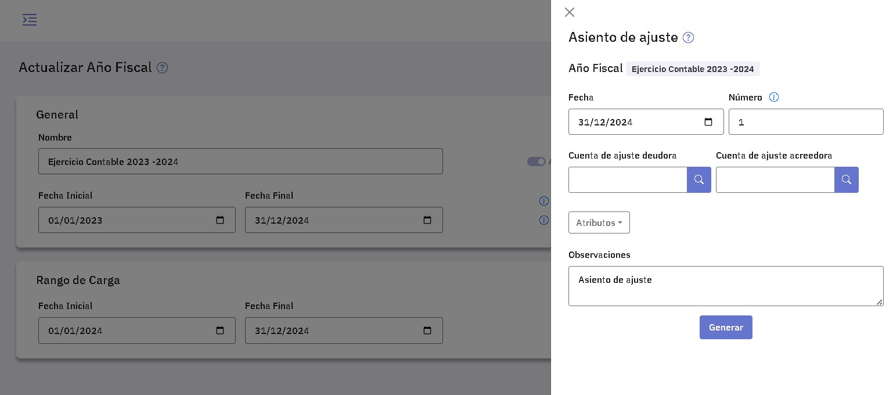
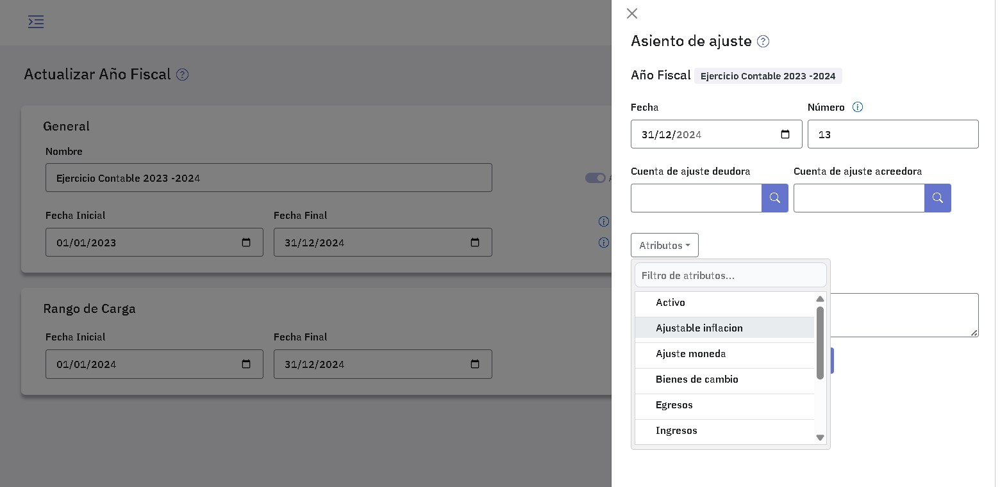
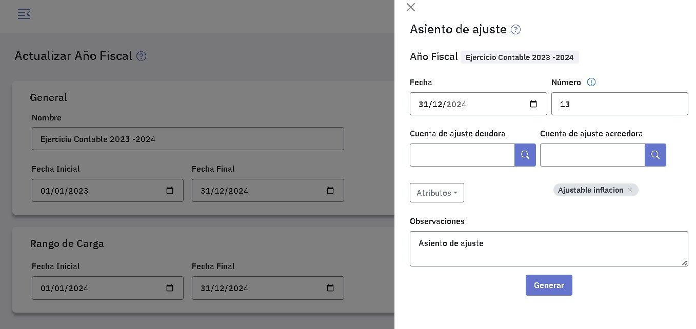

Asientos de ajuste
Los asientos de ajuste se generan en forma automática y tienen por objeto ajustar las cuentas que tienen asociados índices y cotizaciones.
También podés cargarlos en forma manual, en la pantalla de asientos, indicando en "Tipo" que se trata de un asiento de ajuste.
Para generar un asiento de ajuste en forma automática tenés que ingresar al punto "Año fiscal", presionar y completar los datos de la ventana.

El sistema te ofrece la fecha del día, el próximo número de asiento disponible y un texto para la observación, podés modificar cualquiera de estos datos como mejor te convenga.
Es obligatorio ingresar las cuentas de ajuste deudora y acreedora. Estas no pueden ser cuentas ajustables ni tampoco pueden imputarse mediante centros de costos.
El asiento de ajuste que se genera toma como contrapartida las cuentas informadas como cuentas de ajuste deudora y acreedora al definir cada una de las cuentas ajustables, éstas prevalecen a las cuentas que se informan al realizar la tarea.
En caso que al definir las cuentas ajustables dichos datos se hayan omitido, se toman las cuentas que se informan al realizar la tarea.
En principio, el asiento incluye todas las cuentas ajustables, ya sean por indice o por cotización; en caso que desees incluir sólo algunas de ellas tenés que indicar uno o más atributos que las agrupen.
Si por ejemplo, al definir las cuentas asociaste los atributos "Ajuste inflación" y "Ajuste moneda" a las cuentas correspondientes y querés generar un asiento que incluya solamente a las cuentas que se ajustan por inflación, seleccioná el atributo "Ajuste inflación".

Cuando selecciones el atributo lo verás en la pantalla.

Utilizando diferentes atributos podés generar todos los asientos de ajuste que necesites, por ejemplo, incluir en un asiento las cuentas que se ajustan por dólar, en otro las que se ajustan por euros, y así según sea tu conveniencia.
Ajuste por cotización
El ajuste de un asiento por cotización a una fecha de ajuste se calcula como:
Monto del asiento x cotización a la fecha de ajuste - Monto del asiento x cotización a la fecha de valorización del asiento
El asiento de ajuste por cotización a una fecha de ajuste se calcula de la siguiente manera:
Para todos los asientos que se ajustan:
Se toma la siguiente sumatoria:
[Monto x cotización (a la fecha de ajuste) – Monto x cotización (a la fecha de valorización) ]
y se restan:
Los asientos de ajuste anteriores
Acá podés ver un ejemplo detallado del cálculo de un asiento de ajuste por cotización.
Ajuste por Indice
El ajuste de un asiento por índice a una fecha de ajuste se calcula como:
Importe del asiento x Índice a la fecha de ajuste / Indice a la fecha de valorización - Importe del asiento
El asiento de ajuste por índice a una fecha de ajuste se calcula de la siguiente manera:
Se ajustan todos los asientos desde el inicio de ejercicio a la fecha de ajuste y se restan todos los asientos de ajuste anteriores
Para todos los asientos que se ajustan:
Se toma la siguiente sumatoria:
[Importe del asiento x Índice a la fecha de ajuste / Indice a la fecha de valorización - Importe del asiento]
Y se restan:
Los asientos de ajuste anteriores
Acá podés ver un ejemplo detallado del cálculo de un asiento de ajuste por índice.